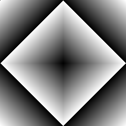
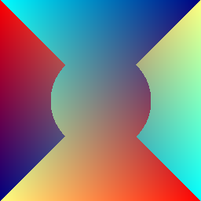

Пример программы, создающей полноцветное растровое изображение (RGB) и рисующей фигуры с помощью модуля PIL (обратите внимание на скобки в параметрах функции!). А ещё обратите внимание, что при увеличении на границе фигур мы увидим "ступеньки" - отдельные раскрашенные пиксели.
from PIL import Image, ImageDraw
XMAX =600
YMAX = 500
x0 = 30
y0 = 100
x1 = 400
y1 = 200
img = Image.new("RGB", (XMAX, YMAX), (0, 50, 100)) # Создаём новое растровое изображение
img_draw = ImageDraw.Draw(img) # Создаём объект, который позволяет рисовать поверх изображения img
img_draw.rectangle((x0, y0, x1, y1), outline=None, fill=(170,170,170)) # Прямоугольник без контура
img_draw.polygon((x0+100, y0+150, x1+100, y1+150, x0+100, y1+150), outline=(0, 256, 256), fill=(230,230,0))
img_draw.line((0, 0, 400, 400), fill=(255, 255, 0))
img_draw.line((-100, 0, 500, 600), fill=(255, 255, 0))
img_draw.ellipse((450, 150, 550, 250), fill="#FF00FF")
img_draw.rectangle((450, 150, 550, 250), outline="#FF0000", width =2) # Прозрачный прямоугольник
img.save('picture1.png') # Сохраняем картинку в файл
img.show() # Открывается стандартная программа для показа изображений
В следующем примере создаётся изображение в цветовой модели "Grayscale". Каждую точку этого изображения можно покрасить в один из 256 цветов - от 0 (чёрный) до 256 (белый). Параметр fill в функции point() задаёт цвет точки, который в данном примере равен координате х.
from PIL import Image, ImageDraw
w = 256
h = 256
img = Image.new("L", (w, h))
img_draw = ImageDraw.Draw(img)
for y in range(256):
for x in range(256):
img_draw.point((x, y), fill=x)
img.show()
А. Используя этот пример, нарисуйте следующие картинки:
1) горизонтальный градиент от белого к чёрному
2) вертикальный градиент от чёрного к белому
3) вертикальный градиент от белого к чёрному
4) градиент, в котором цвета меняются одновременно и по горизонтали, и по вертикали.
Подсказка: В следующих примерах используйте нахождение остатка, целочисленное деление, умножение, модуль числа (функция abs()) - не всё сразу, конечно.
5)
6)
7)
8)
9)
10)
11)
12)
13)
На полноцветной картинке цвет каждой точки задаётся тремя числами: яркостью красного, зелёного и синего луча, или "канала". По умолчанию цвет фона чёрный.
from PIL import Image, ImageDraw
w = 256
h = 256
img = Image.new("RGB", (w,h))
img_draw = ImageDraw.Draw(img)
for y in range(256):
for x in range(256):
img_draw.point((x, y), fill=(255, 150, 0))
img.show()
В. Создайте вертикальный градиент 1) от красного к жёлтому, 1) от жёлтого к красному, 3) от голубого к зелёному, 4) ещё какой-нибудь.
С. 1) Создайте картинку, в которой яркость канала красного меняется по горизонтали, яркость канала зелёного - по вертикали, яркость синего постоянна.
2) Создайте картинку, в которой яркость всех каналов изменяется (объедините три формулы из задания А). Может получиться, например, так:
D. Создайте картинку, в которой яркость всех каналов изменяется. Например, такую:

1) Измените часть картинки так, чтобы в середине появился прямоугольник, раскрашенный по-другому (пиксели с краю менять не надо). Например, так:
2) Измените нижнюю левую часть картинки, а верхнюю правую оставьте неизменной. Например, так:
Подсказка: Верхняя граница цикла, перебирающего точки в одном ряду, зависит от номера ряда.
3) Измените нижнюю правую часть картинки, а верхнюю левую оставьте неизменной. Например, так:
Подсказка: Нижняя граница цикла, перебирающего точки в одном ряду, зависит от номера ряда.
Если использовать внутри цикла условный оператор, можно "на ходу" решать, какие пиксели каким градиентом закрашивать.
Или сначала закрасить всю картинку, а потом поменять её часть.
Е. Создайте следующие картинки (градиентная заливка может быть любой):
1)
2) 
3) 
4) 
5)
6)
7) 
8) 
F. Напишите функцию, добавляющую к картинке шум. Яркость всех составляющих (R, G, B) каждого пикселя меняется на случайную величину в заданном интервале.
Примените данную функцию к созданным ранее картинкам. Получится, например, так:
G. Цветовая иллюзия. Круги - разноцветные?

Фон состоит из тонких полосок красного, зелёного и синего цветов. Поверх фона располагаются одинаковые серые "шарики" (напишите отдельную функцию для рисования такого шарика поверх уже существующего фона). Поверх каждого "шарика" рисуются полоски только одного цвета: красного, зелёного или синего (для этого тоже удобно создать отдельную функцию). Кажущийся цвет круга будет зависеть от цвета нарисованных поверх него полосок.